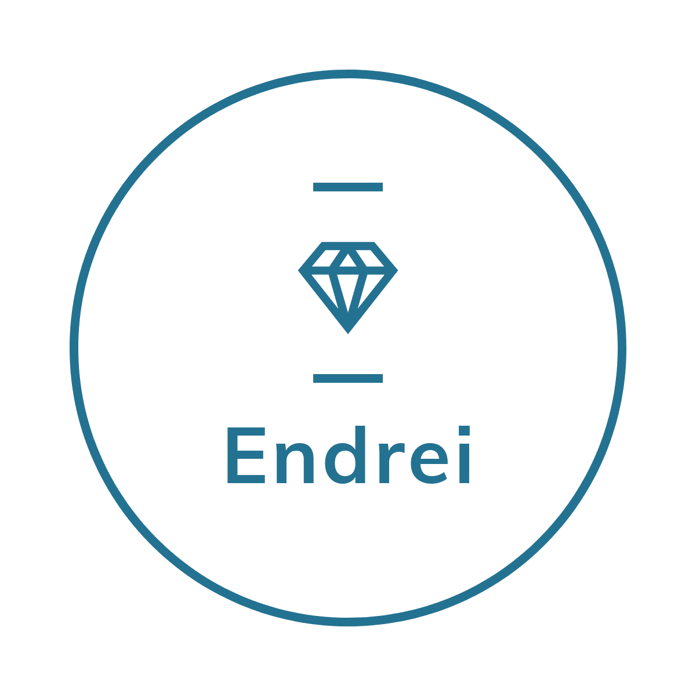

To my Dearest Parents,
Since the day that I was born, you gave me a life that would lead me to my bright future. Staring my gradeschool years, you let me enter a wonderful private school even though during the entrance exam, I didn't pass the cut-off score. You managed to talk to the principal to let me be enrolled in the school. As years go by, I had several downs during my gradeschool years and yet, you motivated me to improve myself until my highschool years came. I gained a lot of awards and recognitions out of my efforts, out of my sleepless nights trying to finish papers and submit on time, out of the times when I cannot concentrate on things because of certain problems, still nothing can break me apart. When graduation came, I cannot imagine how happy you are for me because of my hardships that bore successes. I always say to myself, how lucky I am to have great parents like you.
Despite of my "kakulitan", you were filled with a lot of patience I must say. Sometimes, I just want to say that I want to be me sometimes. I want to go places to seek refuge and to reflect on certain aspects of life. Thank you for guiding me and giving a life that I will never forget. Thank you for providing me everything and for working so hard. I love you, my dear parents from the bottom of my heart. No words can express my love for all the things that you have done for me.
Love,
Your loving son.